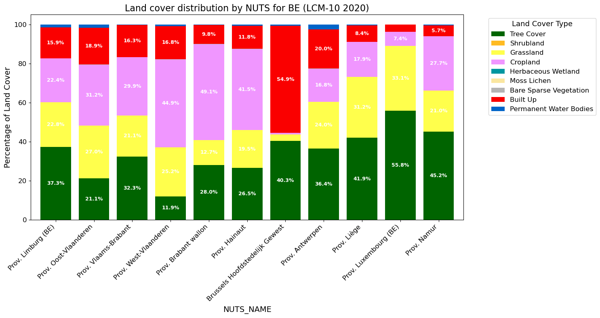

The NUTS hierarchy has three levels: - NUTS 1 – major socio-economic regions - NUTS 2 – basic regions for regional policy (default, NUTS_LEVEL = 2) - NUTS 3 – small regions for specific diagnoses
COUNTRY_CODES = ["BE"]SPATIAL_UNIT ="NUTS"# "NUTS" or "COUNTRIES"NUTS_LEVEL =2# NUTS level to use when SPATIAL_UNIT is "NUTS"# Backend to connect to:# "openeo.terrascope.be" – Terrascope# "openeo.dataspace.copernicus.eu" – Copernicus Data Space Ecosystem (CDSE)BACKEND ="openeo.terrascope.be"# Apply cos(latitude) area correction to account for pixel-area shrinkage toward the poles# in WGS 84. Disable to get a simple unweighted mean (faster, useful for quick checks).AREA_CORRECTION =True# Suffix for file and job namescountry_codes_str ="-".join(COUNTRY_CODES)suffix =f"{SPATIAL_UNIT.lower()}_{country_codes_str}"suffix
Load the geometries of the regions to survey from the Eurostat GISCO geodata service.
Both datasets are cached locally in /content/resources/ after the first download.
import requestsGISCO_BASE ="https://gisco-services.ec.europa.eu/distribution/v2"SPATIAL_CONFIGS = {"NUTS": {"url": f"{GISCO_BASE}/nuts/geojson/NUTS_RG_01M_2024_4326.geojson","cache": BASE_DIR /"resources/NUTS_RG_01M_2024_4326.geojson","drop_columns": ["MOUNT_TYPE", "URBN_TYPE", "NAME_FREN", "COAST_TYPE", "SVRG_UN", "CAPT", "EU_STAT", "EFTA_STAT", "CC_STAT", "NAME_GERM"],"id_property": "NUTS_ID", },"COUNTRIES": {"url": f"{GISCO_BASE}/countries/geojson/CNTR_RG_20M_2024_4326.geojson","cache": BASE_DIR /"resources/CNTR_RG_20M_2024_4326.geojson","drop_columns": ["CNTR_NAME", "NAME_FREN", "ISO3_CODE", "SVRG_UN", "CAPT", "STAT_CODE", "EU_STAT", "EFTA_STAT", "CC_STAT", "NAME_GERM"],"id_property": "CNTR_ID", },}cfg = SPATIAL_CONFIGS[SPATIAL_UNIT]ifnot cfg["cache"].exists(): cfg["cache"].parent.mkdir(parents=True, exist_ok=True)# Use requests to download so Python's SSL context can be used response = requests.get(cfg["url"]) response.raise_for_status() cfg["cache"].write_bytes(response.content)
spatial_geometries = gpd.read_file(cfg["cache"])if cfg["drop_columns"]: spatial_geometries = spatial_geometries.drop(columns=cfg["drop_columns"])# Partition the requested codes by length (2-letter vs 3-letter) so we can# filter on the correct attribute for each.codes_2 = [c for c in COUNTRY_CODES iflen(c) ==2]codes_3 = [c for c in COUNTRY_CODES iflen(c) ==3]if SPATIAL_UNIT =="NUTS": spatial_geometries = spatial_geometries[ spatial_geometries["CNTR_CODE"].isin(codes_2)& (spatial_geometries["LEVL_CODE"] == NUTS_LEVEL) ] id_col ="NUTS_NAME"elif SPATIAL_UNIT =="COUNTRIES": spatial_geometries = spatial_geometries[ spatial_geometries["CNTR_ID"].isin(codes_2)| spatial_geometries.get("COUNTRY_URI", pd.Series(index=spatial_geometries.index, dtype=object)).isin(codes_3) ] id_col ="NAME_ENGL"spatial_geometries
# Classes from https://stac.terrascope.be/collections/lcfm-lcm-10LCFM_LEGEND = {"Tree_Cover": 10,"Shrubland": 20,"Grassland": 30,"Cropland": 40,"Herbaceous_Wetland": 50,"Mangroves": 60,"Moss_Lichen": 70,"Bare_Sparse_Vegetation": 80,"Built_Up": 90,"Permanent_Water_Bodies": 100,"Snow_Ice": 110,"Unclassifiable": 254,}def lcfm_to_masks(bands): lcfm_list = [bands[0] == value for value in LCFM_LEGEND.values()]return eop.array_create(lcfm_list)
Build the openEO process graph:
Load the LCFM_LCM_10 collection for 2020 and collapse the time dimension by keeping the first (and only) annual map.
Classify – convert the single-band integer map into one binary mask per land cover class (using lcfm_to_masks), so each band is 1 where that class is present and 0 elsewhere.
Area correction (optional, controlled by AREA_CORRECTION) – append a _weight band equal to cos(latitude) for each pixel. Because the map is distributed in WGS 84 (EPSG:4326), pixels at higher latitudes cover a smaller real-world area; dividing by the sum of weights during post-processing corrects for this distortion.
Geometries – on CDSE the region polygons are uploaded as an artifact (presigned URL) instead of being embedded inline in the process graph. On other backends the GeoJSON is passed inline. Requires openeo[artifacts] to be available.
Aggregate spatially – run aggregate_spatial over the region polygons loaded from GISCO, summing the (weighted) class masks per polygon. With area correction the result is a weighted sum; without it a simple mean is used instead.
# Collection and band name differ by backendBACKEND_COLLECTION_CONFIG = {"openeo.terrascope.be": {"collection": "LCFM_LCM_10", "band": "MAP"},"openeo.dataspace.copernicus.eu": {"collection": "CLMS_LCM_GLOBAL_10M_YEARLY_V1", "band": "map"},}collection_cfg = BACKEND_COLLECTION_CONFIG.get( BACKEND)# Load in the LCFM LCM-10 datalcfm = connection.load_collection(collection_cfg["collection"], temporal_extent=["2020-01-01", "2020-12-31"], bands=[collection_cfg["band"]]).reduce_dimension(dimension="t", reducer="first")classified = ( lcfm.apply_dimension(dimension="bands", process=lcfm_to_masks) .apply(lambda x: x *1) .rename_labels( dimension="bands", target=list(LCFM_LEGEND.keys()) ))if BACKEND =="openeo.dataspace.copernicus.eu":# Upload the GeoJSON as an artifact so it is not embedded in the process graph.# Requires: pip install "openeo[artifacts]" --upgradeimport tempfilefrom openeo.extra.artifacts import build_artifact_helper artifact_helper = build_artifact_helper(connection)with tempfile.NamedTemporaryFile(mode="w", suffix=".geojson", delete=False) as tmp: tmp.write(spatial_geometries.to_json()) tmp_geojson = Path(tmp.name) storage_uri = artifact_helper.upload_file(tmp_geojson, f"geometries_{suffix}.geojson") presigned_uri = artifact_helper.get_presigned_url(storage_uri) geoms = presigned_urielse: geoms =eval(spatial_geometries.to_json())if AREA_CORRECTION:# Area correction for WGS 84: pixel area ∝ cos(latitude).# Assumption: the 'y' coordinate in the UDF chunk is latitude in degrees (EPSG:4326).# Run the "Verify coordinate assumptions" cell below to confirm this for your backend. _add_cos_lat_weight = openeo.UDF("""import numpy as npimport xarray as xrdef apply_datacube(cube: xr.DataArray, context: dict) -> xr.DataArray: # 'y' coordinate is latitude in degrees for EPSG:4326 data w = np.cos(np.deg2rad(cube.coords["y"])).clip(min=0) # Reuse first-band slice as spatial template for the weight band (avoids expand_dims) w_band = cube.isel(bands=slice(0, 1)) * 0 + w return xr.concat([cube * w, w_band], dim="bands")""") classified = classified.apply_dimension( process=_add_cos_lat_weight, dimension="bands", ).rename_labels( dimension="bands", target=list(LCFM_LEGEND.keys()) + ["_weight"], ) aggregator ="sum"else: aggregator ="mean"# Note: aggregate_spatial considers all pixels for which the point at the pixel center intersects with the corresponding polygonaverage = classified.aggregate_spatial(geoms, aggregator)
Start job
# Execute the data cube processing and save the resultuse_large_job_options = SPATIAL_UNIT =="COUNTRIES"or (SPATIAL_UNIT =="NUTS"and NUTS_LEVEL ==0)job_options = {"executor-memory": "6G","executor-memoryOverhead": "6G","max-executors": 20,"do_extent_check": False,} if use_large_job_options else {}job = average.execute_batch( out_format="Parquet", title=f"land-cover-lcfm_{suffix}", feature_id_property=cfg["id_property"], job_options=job_options,)
# Load the datadf = pd.read_parquet(result_file)df[id_col] = df[id_col].str.split('/').str[-1]land_cover_columns =list(LCFM_LEGEND.keys())if AREA_CORRECTION:# Area correction: the job produced weighted sums per class.# Specifically, the result contains the following columns:# df[class] = Σ cos(lat) over pixels of that class in the region# df["_weight"] = Σ cos(lat) over ALL pixels in the region# These are dimensionless "equator-equivalent pixel counts", NOT areas in m².# Dividing by the sum of weights yields the area-corrected class fraction. df[land_cover_columns] = df[land_cover_columns].div(df["_weight"], axis=0) df = df.drop(columns=["_weight"])# Consistency check: fractions should sum to ~1 per regionrow_sums = df[land_cover_columns].sum(axis=1)assert (row_sums -1).abs().lt(1e-9).all(), (f"Land cover fractions do not sum to 1 (max deviation: {(row_sums -1).abs().max():.6f})")# Multiply by 100df[land_cover_columns] = df[land_cover_columns] *100# Remove classes with zero coverage across all regionsland_cover_columns = [lc for lc in land_cover_columns if df[lc].sum() >0]# Colors derived from classification:classes color_hint in the STAC collectioncolors = {'Tree_Cover': (0x00/255, 0x64/255, 0x00/255), # #006400'Shrubland': (0xFF/255, 0xBB/255, 0x22/255), # #FFBB22'Grassland': (0xFF/255, 0xFF/255, 0x4C/255), # #FFFF4C'Cropland': (0xF0/255, 0x96/255, 0xFF/255), # #F096FF'Herbaceous_Wetland': (0x00/255, 0x96/255, 0xA0/255), # #0096A0'Mangroves': (0x00/255, 0xCF/255, 0x75/255), # #00CF75'Moss_Lichen': (0xFA/255, 0xE6/255, 0xA0/255), # #FAE6A0'Bare_Sparse_Vegetation': (0xB4/255, 0xB4/255, 0xB4/255), # #B4B4B4'Built_Up': (0xFA/255, 0x00/255, 0x00/255), # #FA0000'Permanent_Water_Bodies': (0x00/255, 0x64/255, 0xC8/255), # #0064C8'Snow_Ice': (0xF0/255, 0xF0/255, 0xFF/255), # #F0F0FF'Unclassifiable': (0x68/255, 0x68/255, 0x68/255), # #686868}
# Plot the datafig, ax = plt.subplots(figsize=(15, 8))df.set_index(id_col)[land_cover_columns].plot( kind='bar', stacked=True, color=[colors[col] for col in land_cover_columns], width=0.8, ax=ax)# Direct labeling: annotate each bar segment with its percentage (only if > 5%)for container, col inzip(ax.containers, land_cover_columns): labels = [f'{bar.get_height():.1f}%'if bar.get_height() >5else''for bar in container] ax.bar_label(container, labels=labels, label_type='center', fontsize=9, color='white', fontweight='bold')# Customize the plotax.set_xlabel(id_col, fontsize=14)ax.set_ylabel('Percentage of Land Cover', fontsize=14)ax.set_title(f'Land cover distribution by {SPATIAL_UNIT} for {", ".join(COUNTRY_CODES)} (LCM-10 2020)', fontsize=16)handles, labels = ax.get_legend_handles_labels()ax.legend(handles, [l.replace('_', ' ') for l in labels], title='Land Cover Type', bbox_to_anchor=(1.05, 1), loc='upper left', fontsize=12, title_fontsize=13)plt.xticks(rotation=45, ha='right', fontsize=12)plt.yticks(fontsize=12)plt.tight_layout()plt.show()

Limitations of the demo: - NUTS regions with higher details (scale lower than 10M) - In order to upscale to large regions (e.g. US), it might be necessary to increase memory limits.